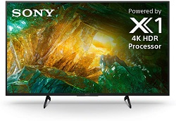

The company was incorporated by Ibuka Masaru and Morita Akio in 1946 as Tokyo Tsushin Kogyo (“Tokyo
Telecommunications Engineering Corporation”). Ibuka, whose Japan Precision Instruments Company had
supplied
electronic devices during World War II, and Morita, an applied sciences instructor, had met during World
War
II as engineers designing heat-seeking missiles for the Imperial Japanese Army. Ibuka and Morita worked
together for the next 40 years in what has been called one of “business history’s most productive and
intriguing relationships.”
Ibuka’s genius with product development and Morita’s mastery of business management and marketing
turned Sony into one of the most renowned brand names on the globe. Sony, which became the official name
for
the company in January 1958, was derived from the Latin sonus (“sound”) and was conceived to be an
international and not a Japanese term.
The early 1990s were difficult years for Sony. The Japanese economy entered a decadelong recession,
and
both Ibuka and Morita suffered strokes (in 1992 and 1993, respectively). Morita officially retired in 1994
and
died in 1999. With its founders no longer at the controls, Sony declared its first loss, more than $200
million, in 1993. Despite the business turmoil, Sony continued to design and deliver new products. In 1994
its
entertainment division introduced its PlayStation video game console to the Japanese market. By 2002 the
game
unit was contributing more than 10 percent of the company’s yearly revenues.
Sony PS5 $499.99Sony 20.1 Megapixel Digital Camera $699.99Sony Bluetooth Noise Cancelling Headphones $199.99

Sony 43-inch 4K TV $999.99